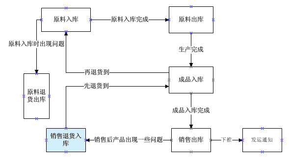
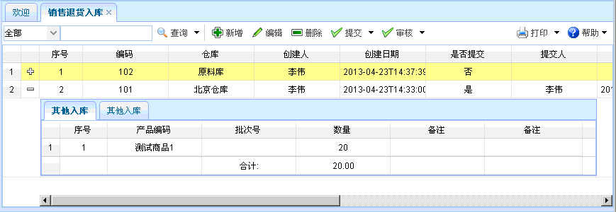
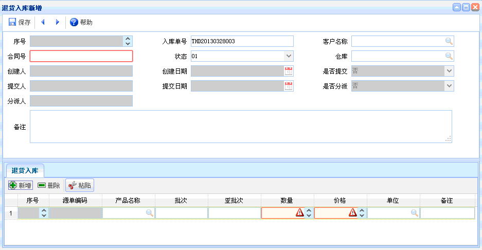
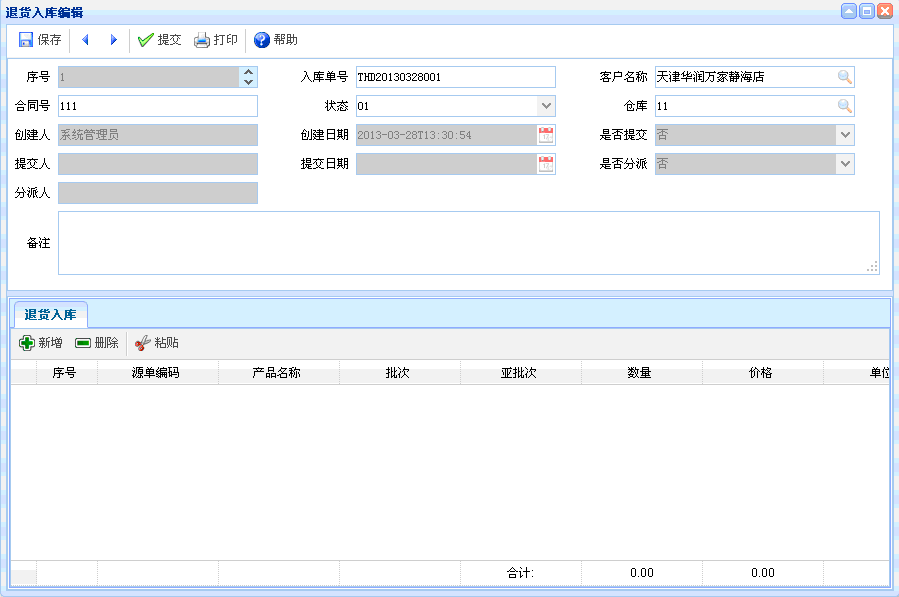

销售退货入库
销售退货入库
一、概述：主要是货物销售后，由于各种原因需退货，工厂进行的相关操作。
二、流程图演示：如下图所示。

图表【流程图】
图表【流程图】
三、功能介绍：点击【销售退货入库】，进入销售退货入库页面，可查看相应的详细信息和流程状态。如下图所示。功能主要包括：查询、新增、编辑、删除、提交、审核。

图表4-7-1【销售退货入库】
图表4-7-1【销售退货入库】
【查询】：通过设置查询条件，查询出符合条件的销售退货入库信息，直接点击查询按钮即可列出销售退货入库信息。
【新增】：点击新增按钮，如下图所示。新增完毕，点击保存。新增时，红色文本框为必填项，灰色文本框为默认，有搜索图案的字段要进行查询。对销售退货入库相关信息也可进行新增、删除、粘贴操作。 并可以查看流程状态 。

图表4-7-2【新增】
图表4-7-2【新增】
【编辑】：选中某项单据信息，点击编辑按钮后，出现如下图所示内容。进行编辑、提交操作；已提交的单据不能进行编辑。编辑时，红色文本框为必填项，灰色文本框为默认，有搜索图案的字段要进行查询。对销售退货入库详细信息也可进行新增、删除、粘贴操作。 并可以查看流程状态。

图表4-2-3【编辑】
图表4-2-3【编辑】
【删除】：选中某项销售退货入库信息后，点击删除，已提交的单据不能删除。
【提交】：选中某项销售退货入库信息后，点击提交，已提交的单据不能再次提交。
【审核】：选中某项销售退货入库信息后，点击审核，即可审核该单据，未提交的单据不能审核。
注意事项
1、提交后不能再次进行编辑，如果需要进行编辑，提交人需撤消提交后，才能再次进行编辑。
2、审核完成后，表示成品已入库，若想取消，由审核人进行撤销审核。
 常见问题
常见问题
1、？
2、？
3、？